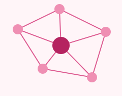

Better decisions beginbeneath the surface.
From interaction to insight.

Pharma
GNN
See the whole regimen
Spot priority pairs in one
readable interaction matrix.
Bring context into focus
Compare age and sex strata
with uncertainty in view.
Follow the biology
Inspect associated pathways
and the evidence behind them.
Explore another option
Compare candidate alternatives
before updating a draft.